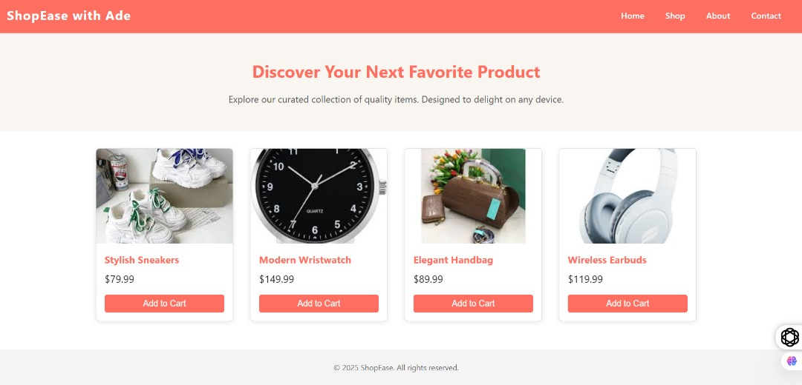

ADEBIMPE M. ADEROJU
About Me
I am a recent Chemical Engineering graduate from Obafemi Awolowo University, now pursuing software engineering at BYU Idaho. I focus on Python and web development, blending analytical and problem-solving skills. I'm eager to explore the intersection of engineering, data analysis, and AI.
Course Projects
A front-end prototype of an e-commerce site, focusing on responsive design and user experience across various devices, while implementing intricate CSS animations and transitions and including technologies like HTML, CSS (Flexbox, Grid), JavaScript (Vanilla).